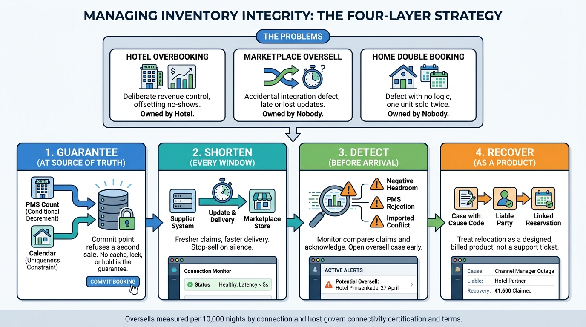

Part III — INVENTORY: Availability, Rates and Price
Never Sell the Same Night Twice: Overbooking, Allotments and Concurrency

Image generated by Google Gemini (gemini-3-pro-image-preview)
Part III — INVENTORY: Availability, Rates and Price

Image generated by Google Gemini (gemini-3-pro-image-preview)